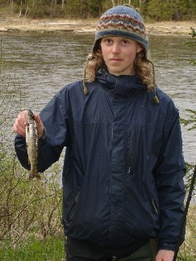
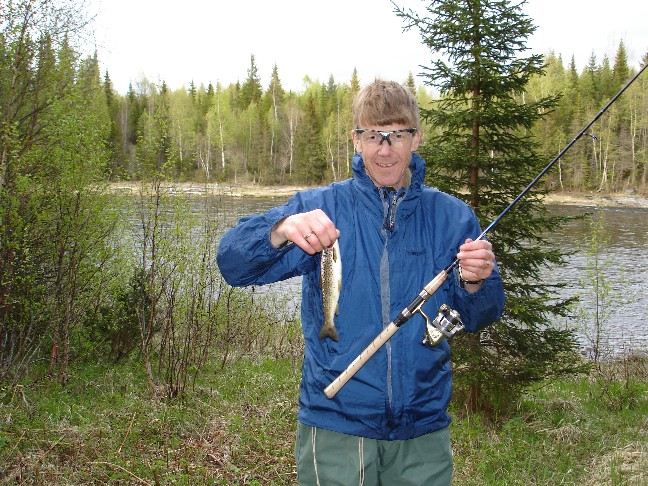
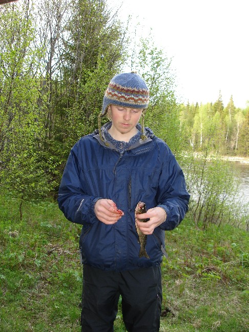

Öringfiske (trout fishing)
It was a day of warmer waters, the fish were somehow more awake, and they took the
bait, both on a normal fishing pole (no fish then with the fly fishing), both trout we caught
at about the same time, both the same size. Strange.


I went on to catch one more trout the next time, slightly larger and more bloody. I think
the water was still to cold for Sven Martin's fly fishing.

That's the fish's blood, by the way, not mine.